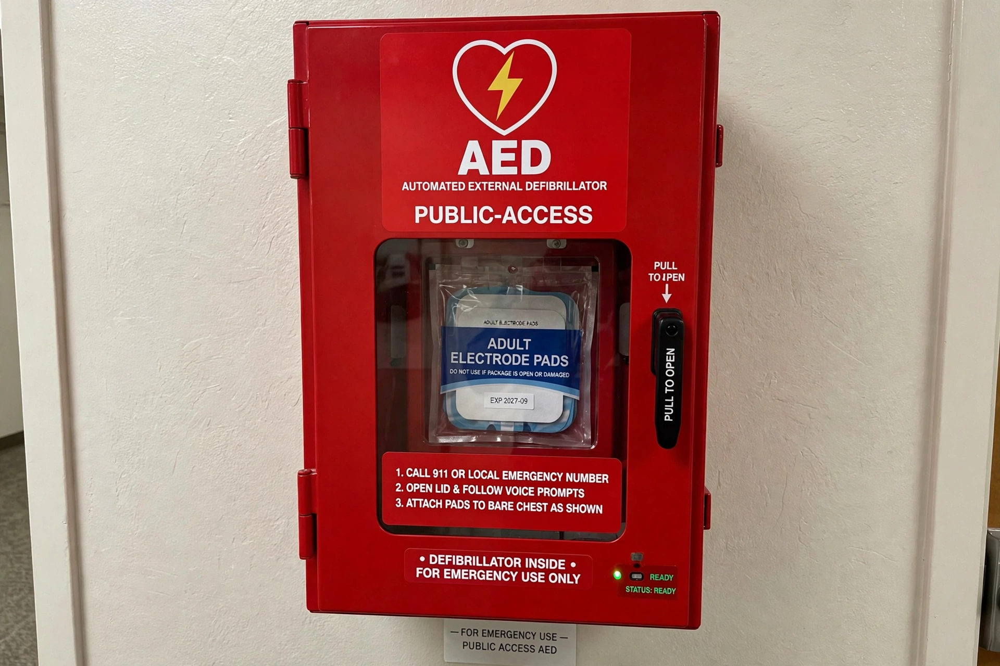

| Automated external defibrillator | |
|---|---|
 | |
| Purpose | Treat life-threatening cardiac arrhythmias by defibrillation |
| Users | Lay responders and healthcare providers |
| Related | Defibrillation, CPR |
An automated external defibrillator (AED) is a lightweight, portable electronic device that automatically diagnoses the life-threatening cardiac arrhythmias ventricular fibrillation (VF) and pulseless ventricular tachycardia, and is able to treat them through defibrillation — the application of electricity which stops the arrhythmia, allowing the heart to re-establish an effective rhythm.
With simple audio and visual commands, AEDs are designed to be used by laypersons. The rescuer switches the unit on, attaches adhesive electrode pads to the victim's bare chest, and follows voice prompts; the device analyses the heart rhythm and, if a shockable rhythm is detected, either delivers the shock automatically or instructs the rescuer to press a button. Modern AEDs use a biphasic waveform, typically delivering 120–200 joules in adults, and give metronome guidance for cardiopulmonary resuscitation between analyses.
Because survival from cardiac arrest falls by roughly 7–10% per minute without defibrillation, AEDs are widely deployed in airports, schools, sports venues, offices and aircraft, often in clearly marked wall cabinets. Studies of public-access defibrillation programmes have shown survival rates doubling or more when bystanders use an AED before ambulance arrival. In many jurisdictions, users are protected by Good Samaritan laws.
Portable defibrillators were pioneered in the 1960s by Frank Pantridge in Belfast. The first fully automated external units, able to detect ventricular fibrillation and shock without operator interpretation of an ECG, appeared in the early 1980s, and widespread public-access deployment followed in the 1990s.